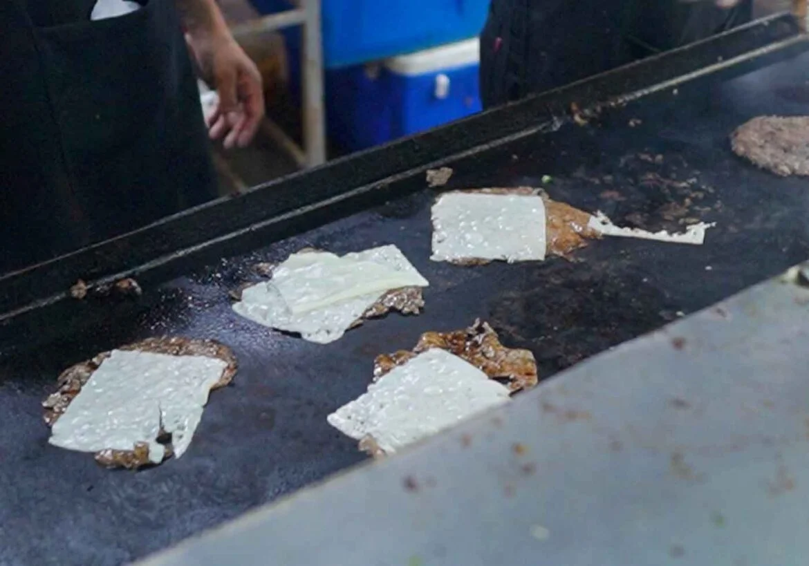
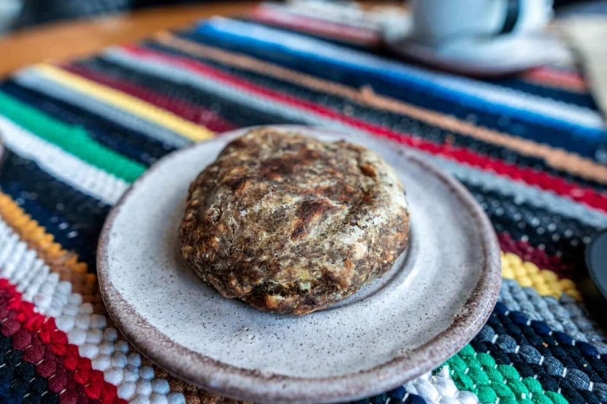

Chipa é um pãozinho paraguaio feito com polvilho, queijo, ovos e outros ingredientes, sendo bem parecido com o nosso conhecido pão de queijo.

Lomito
o pão é fino, como um wrap, com uma carne bem fininha de porco ou de gado, mais uma fatia de queijo, alface, tomate e presunto.

Payaguá Mascada
Payaguá mascada é uma espécie de croquete frito com formato e aparência de carne de hambúrguer, mas na verdade tem mandioca, carne moída, cebolinha e vários temperos.